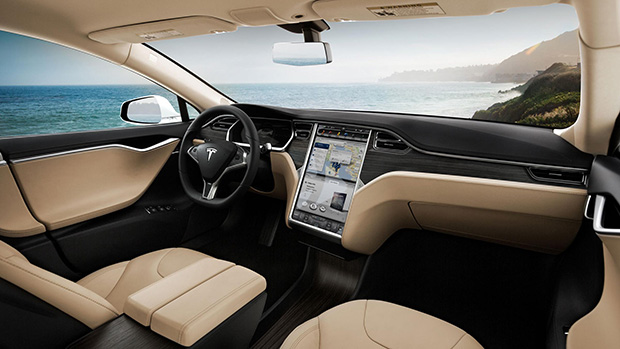
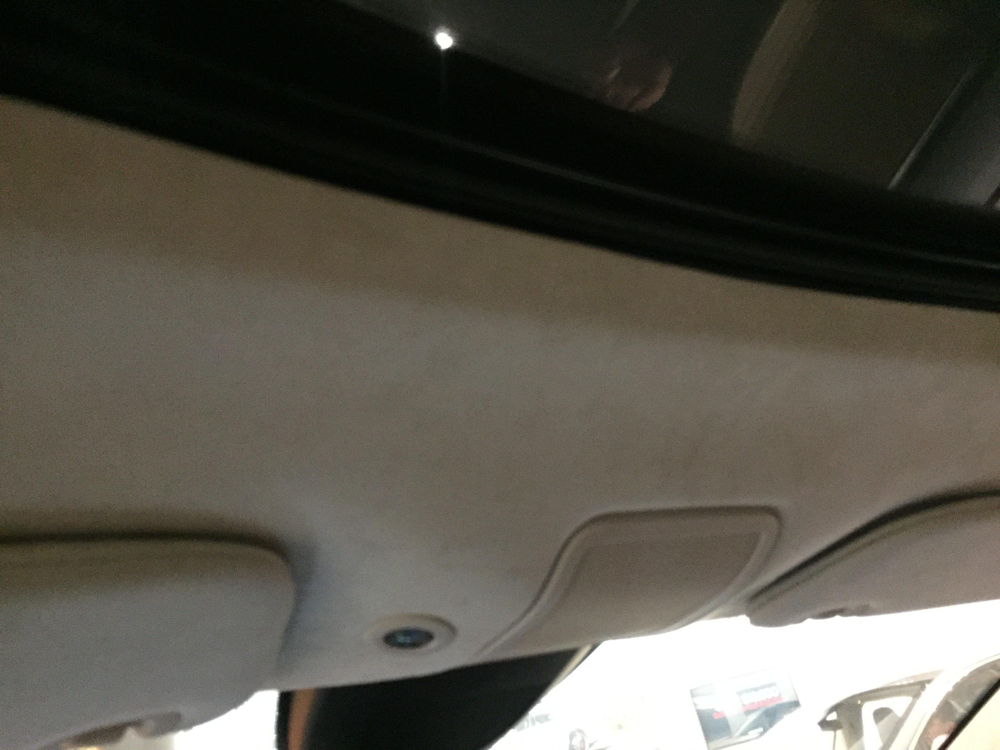
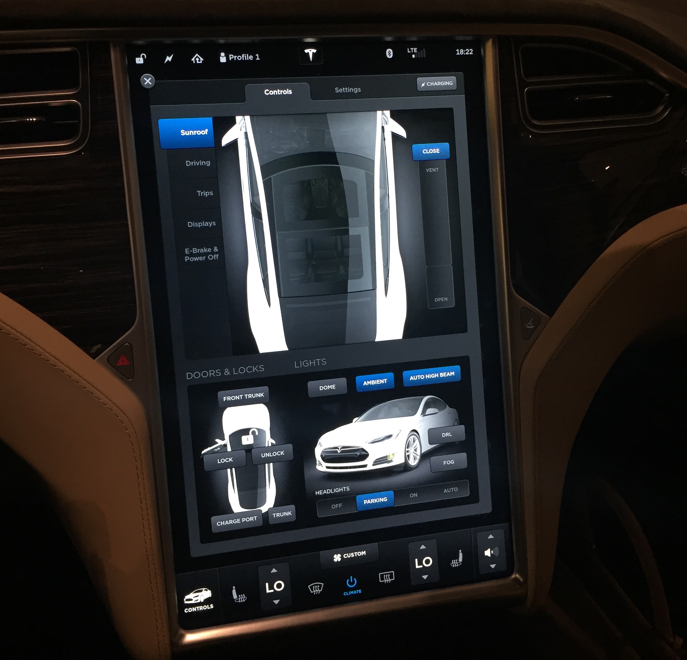
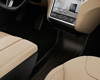
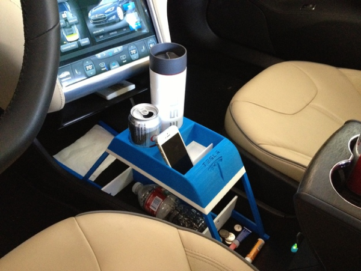
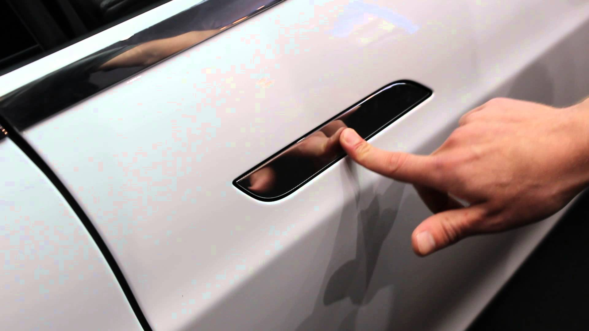
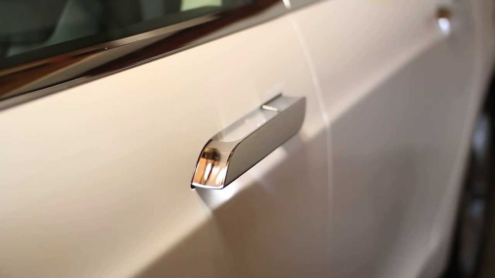

Design Flaws of the Tesla Model S Many people admire Tesla cars. They think it is the car of the future. Although electric cars are environment-friendly, quiet and performant, I found the design of Tesla's Model S particularly awkward and user-unfriendly, with potential safety problems. Lacking physical controlsA major design problem of the Model S is that the designers put too much faith in the touch screen. There are so few physical controls. Almost everything is controlled by the touch screen. Take a look at the interior, it is almost bare. This hurts both the esthetics and functionality. There is no switch on the dome for operating the sunroof (see picture). When people see a door or window, they expect a switch right next to it. Not the case with the Model S. You look up from the seat, and there is nothing you can press...  This "simplicity" comes with a cost. How do you open the sunroof? Answer: from the touch screen. You just tap the Control tab on the top, then tap the Sunroof tab to the left, and then you tap and hold a slide bar on the right, drag it down...  But this is not really simple. It just makes simple things complicated. It violates a very important design principle: Controls should be close to the objects that they control, and should be natural for people to discover and intuitive to use. The touch screen controls too many objects. It is overly multiplexed in functionality. It is nowhere close to the object it controls, and there is a deep path for finding the menu items. All of this makes the car confusing and cumbersome. Compare with other cars, they usually have a dedicated switch for the sunroof, right there above your head. You pull it back and it opens the sunroof. You push it forward and it closes the sunroof. You push it upwards and it tilts the sunroof. The control is easy to discover, direct to access, and intuitive to use. Designers call this kind of design "natural mapping", because the motion of the controller naturally corresponds to the motion of the sunroof. Similarly in the Model S, there is no physical dial for the vent air, no physical switches for the head lights, fog lights, ambient lights, ... You have to use the touch screen for all of those. Central point of failureFrom a system designer's perspective, the Model S has a central point of failure. Because the touch screen controls almost everything, if it fails, you lose control of pretty much everything: sunroof, vent, door handles, windows, ... This indeed happened to some Tesla users. Take a look at this article. To quote the most important part of it:
Ergonomics not well thought outI also noticed that when I sit back in the driver's seat, the touch screen is not quite within my arm's reach. I have to sit up a little and reach my right arm out. Because the screen lacks tactical feedback, you must look at it in order to trigger the correct button. This is not efficient or comfortable, and may not be safe when driving. There is also a space-utilization issue. Underneath the touch screen, there is a flat surface.  This is the usual place where other cars put the shifter, coffee holder and utility compartments. For the Model S, it's just a flat, wide-open space. If you put small objects in it, they will fly around, collide with each other, making noise as you drive. The platform's position is so low, that you have to bend over to get things. This is a waste of the most ergonomically convenient space in the car-the space right under the occupant's arms at a comfortable sit position. Some users also reported that the coffee holder of the Model S are placed at a diabolical location, making it easily for the elbows to knock over the coffee cups. Thus some expert user DIY'ed his own coffee holder using a 3D printer...  Troublesome door handleThe Model S has a very special door handle design. At its rest position, the door handle retracts, flushing with the door surface.  As the driver walk close, the door handle extrudes, like a friend extending his hand, for a handshake.  Emotionally this is a nice design, but practically there are problems.
There have been discussions how to take care of the door handle in cold weather. Solutions includes:
Now, maybe you have understood, why no other cars, from the cheapest to the most expensive, use this door handle design? Reliability issuesDespite of its high price, the Model S has more than its share of reliability problems. Reports are saying, because of power system failures, two thirds of the early Model S cars can't outlive 60,000 miles. Consumer Reports rated Tesla Model S "the most unreliable EV". Safety problemsOn Jan 1 2016, a Model S caught fire for no obvious reason at a supercharge station in Norway. Firefighters were not able to put off the fire with water. They covered the car with a special foam and waited the car to melt down. This is not the first Model S fire incident. There were already three such incidents. As compared to gasoline cars on fire, this is indeed a small number, but the reason why they caught fire is more mysterious. There doesn't need to be accidents. The Model S can just start to burn mysteriously in your garage! Unlike Elon Musk's claims that Model S is very safe, the fire incidents should be taken seriously. Lithium batteries are known to be a fire hazard. Take a look at the fire incidents of the Boeing 787 Dream Liners and see why Model S fires shouldn't be taken lightly. Safety issue of the autopilotPlease refer to my new post on this issue. |